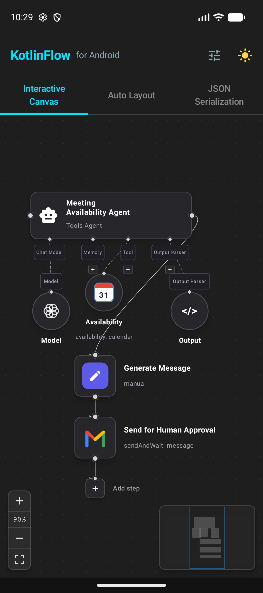

Graph & Workflow Canvas for
Jetpack Compose
A faithful, highly optimized Android port of SwiftFlow (and inspired by ReactFlow). Build interactive node diagrams, AI agent pipelines, and dense topology editors with fluid 120fps pan & zoom, multi-algorithm auto-layout, and customizable connection pins.
Engineered for Any Diagram Complexity
Explore native Android screenshots captured directly from our sample showcase running on Android 15.

Vertical n8n pipeline: top-to-bottom reading scale optimized for mobile portrait screens with branch routing.
Everything You Need for Native Diagrams
Designed to match SwiftFlow 1:1 while leveraging Android's Jetpack Compose architecture for maximum performance.
Jetpack Compose Native
Hardware-accelerated canvas rendering with zero view hierarchy overhead. Smooth 60/120fps pan, pinch-to-zoom, double-tap zoom, and hardware layering.
1:1 SwiftFlow API Parity
Provides direct SwiftFlow* typealiases (SwiftFlow, SwiftFlowState, SwiftFlowDocument, FlowEdge) for seamless mental models and cross-platform porting.
Auto-Layout Engine
Built-in layout algorithms: Hierarchical BFS Tree (Top-to-Bottom, Left-to-Right), Force-Directed physics simulation, and uniform Matrix Grid.
Flexible Edge Routing
Supports Bezier, Straight, Step, SmoothStep, and SimpleBezier routes with animated dashed current lines and arrow markers.
n8n Visual Workflows
Specialized execution status cards (Listening, Success, Evaluated, Sent) with execution duration metrics, item counts, and mobile-first vertical flow support.
JSON Serialization
Full graph document serialization with kotlinx.serialization. Save, export, and load complete graph topologies with toJSONString() and fromJSONString().
Get Started in Seconds
Add KotlinFlow to your Android app using Maven Central or JitPack.
// app/build.gradle.kts
dependencies {
// Official release published on Maven Central
implementation("io.github.joaonart:kotlinflow:1.0.1")
}# gradle/libs.versions.toml
[versions]
kotlinflow = "1.0.1"
[libraries]
kotlinflow = { group = "io.github.joaonart", name = "kotlinflow", version.ref = "kotlinflow" }// app/build.gradle (Groovy DSL)
dependencies {
implementation 'io.github.joaonart:kotlinflow:1.0.1'
}import androidx.compose.runtime.*
import io.github.kotlinflow.*
import io.github.kotlinflow.model.*
@Composable
fun MyFlowDiagram() {
var nodes by remember {
mutableStateOf(
listOf(
Node(id = "1", position = XYPosition(100f, 100f), data = "Start"),
Node(id = "2", position = XYPosition(100f, 300f), data = "Processing")
)
)
}
var edges by remember {
mutableStateOf(
listOf(
FlowEdge(id = "e1-2", source = "1", target = "2", animated = true)
)
)
}
KotlinFlow(
nodes = nodes,
edges = edges,
onNodesChange = { nodes = it },
onEdgesChange = { edges = it }
) {
Background(variant = BackgroundVariant.DOTS)
Controls()
MiniMap()
}
}Modular Component Architecture
Compose rich diagram experiences using first-class declarative primitives.
KotlinFlow / SwiftFlow
Main canvas composable hosting viewport state, gesture recognizers, pan/zoom transitions, and node layer rendering.
Handle
Connection pins (SOURCE or TARGET) positioned at TOP, BOTTOM, LEFT, or RIGHT with connection limits and validation.
Background
Built-in canvas background patterns: DOTS, LINES, CROSS, and NONE with synchronized camera scaling.
Controls & ControlButton
Floating utility buttons for zooming in, zooming out, fitting graph into viewport (fitView), and locking interactions.
MiniMap
Interactive overview thumbnail rendering miniaturized nodes, real-time bounding boxes, and draggable viewport frames.
Auto Layout Engine
Compute dynamic coordinates using applyTreeLayout(), applyForceDirectedLayout(), or applyGridLayout().
Built for Human & AI Pair-Programming
KotlinFlow includes structured context, conventions, and implementation guidelines for modern AI coding assistants (Claude Code, Cursor, Codex, Gemini).
Point your AI tool directly to our dedicated AGENTS.md file for seamless integration into any Android codebase: